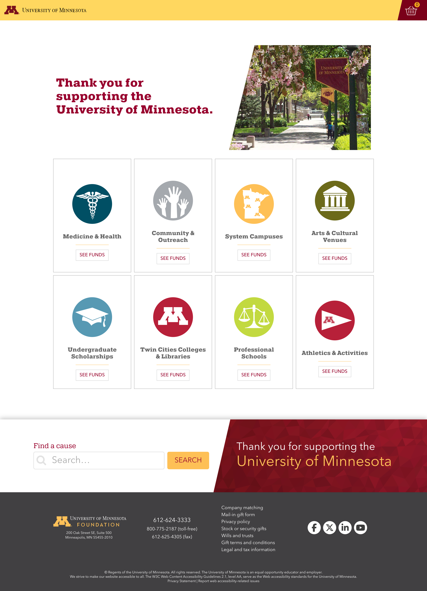

Improved accessibility in legacy code
Skills
- Conducting both automated and manual accessibility testing
- Application of HTML, CSS, and JavaScript skills with accessible practices
- Updating and adapting legacy code
Tools
- PopeTech
- WAVE
- Ghost Inspector
- Chrome DevTools (including Lighthouse)
- Visual Studio Code
- Git/GitHub

Description
I led the accessibility improvements for the University of Minnesota's online giving tool, boosting the automated Pope Tech score from 6.7 to a perfect 10. This was accomplished by modernizing the legacy UI to comply with WCAG standards. I conducted accessibility testing, organized issues, and implemented key enhancements, including refined keyboard navigation, ARIA implementations, and improved screen-reader support.
Work is ongoing to make this site as accessible as possible.